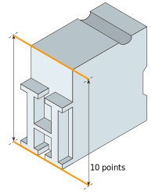

A letter also has a horizontal measure, called its set width. The set width is the body of the letter plus a sliver of space that protects it from other letters. The width of a letter is intrinsic to
the proportions and visual impression of the typeface. Some typefaces have a narrow set width, and some have a wide one. You can change the set width of a typeface by fiddling with
its horizontal or vertical scale.This distorts the line weight of the letters,however, forcing heavy elements to become thin, and thin elements to become thick. Instead of torturing a letterform, choose a typeface that has the proportions you are looking for, such as condensed, compressed, wide, or extended.
— Also called the ‘em size’ or ‘UPM’.
In a font, each character is fitted into its own space container. In traditional metal type this container was the actual metal block of each character. The height of each character piece was uniform, allowing the characters to be set neatly into rows and blocks.
The height of the type piece is known as the ‘em’, and it originates from the width of the uppercase ‘M’ character; it was made so that the proportions of this letter would be square (hence the ‘em square’ denomination).
The em size is what the point size of metal type is calculated upon. So, a 10 points type has a 10 points em (see below).

In digital type, the em is a digitally-defined amount of space. In an OpenType font, the UPM — or em size is usually set at 1000 units. In TrueType fonts, the UPM is by convention a power of two, generally set to 1024 or 2048.
When the font is used to set type, the em is scaled to the desired point size. This means that for 10 pt type, the 1000 units for instance get scaled to 10 pt.
So if your uppercase ‘H’ is 700 units high, it will be 7 pt high on a 10 pt type.
Scalable font formats usually store a single vectorial image, called an outline, for each glyph in a face. Each outline is defined in an abstract grid called the design space, with coordinates expressed in font units. When a glyph image is loaded, the font driver usually scales the outline to device space according to the current character pixel size found in an FT_Size object. The driver may also modify the scaled outline in order to significantly improve its appearance on a pixel-based surface (a process known as hinting or grid-fitting).
Design coordinates are scaled to the device space using a simple scaling transformation whose coefficients are computed with the help of the character pixel size.
device_x = design_x * x_scale device_y = design_y * y_scale x_scale = pixel_size_x / EM_size y_scale = pixel_size_y / EM_size
Here, the value EM_size is font-specific and corresponds to the size of an abstract square of the design space (called the EM), which is used by font designers to create glyph images. It is thus expressed in font units. It is also accessible directly for scalable font formats as face->units_per_EM. You should check that a font face contains scalable glyph images by using the FT_IS_SCALABLE macro, which returns true if appropriate.
When you call the function FT_Set_Pixel_Sizes, you are specifying integer values of pixel_size_x and FreeType shall use. The library will immediately compute the values of and . and .
When you call the function FT_Set_Char_Size, you are specifying the character size in physical is font-specific and corresponds to the size of an abstract square of the design space (called the and FreeType shall use. The library will immediately compute the values of and . and points, which is used, along with the device's resolutions, to compute the character pixel size and the corresponding scaling factors. Here, the scaling factors can correspond to fractional ppem values.), which is used by font designers to create glyph images. It is thus expressed in font units. It is also accessible directly for scalable font formats as . You should check that a font face contains scalable glyph images by using the macro, which returns true if appropriate. macro, which returns true if appropriate.
Note that after calling any of these two functions, you can access the values of the character pixel size and scaling factors as fields of the face->size->metrics structure. pixel_size_x and pixel_size_yFreeType shall use. The library will immediately compute the values of x_scale and y_scale
Note that after calling any of these two functions, you can access the values of the character pixel size and scaling factors as fields of the , you are specifying the character size in physical is font-specific and corresponds to the size of an abstract square of the design space (called theface->size->metrics structure.structure.macro, which returns true if appropriate.
The metrics found in face->glyph->metrics are normally expressed in 26.6 pixel format (i.e., 1/64th of pixels), unless you use the FT_LOAD_NO_SCALE flag when calling FT_Load_Glyph or FT_Load_Char, in which case the metrics are expressed in original font units.
You can access unscaled kerning data using the FT_KERNING_MODE_UNSCALED mode.